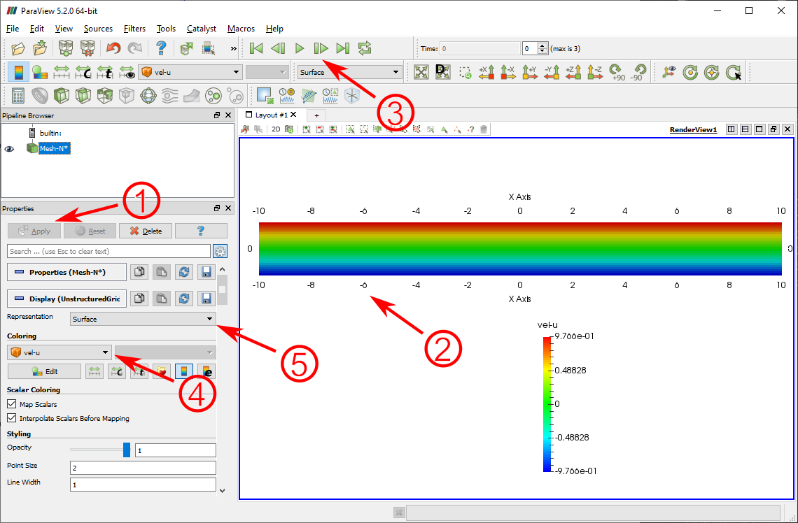
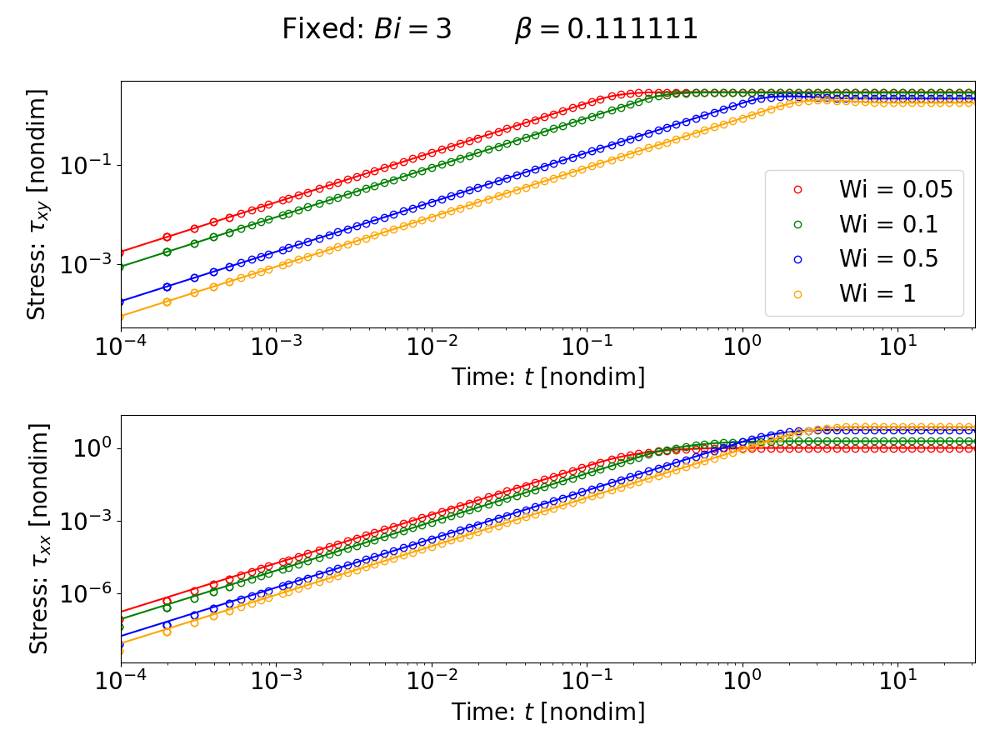
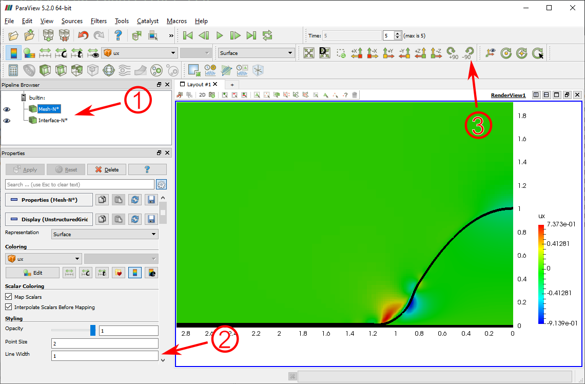
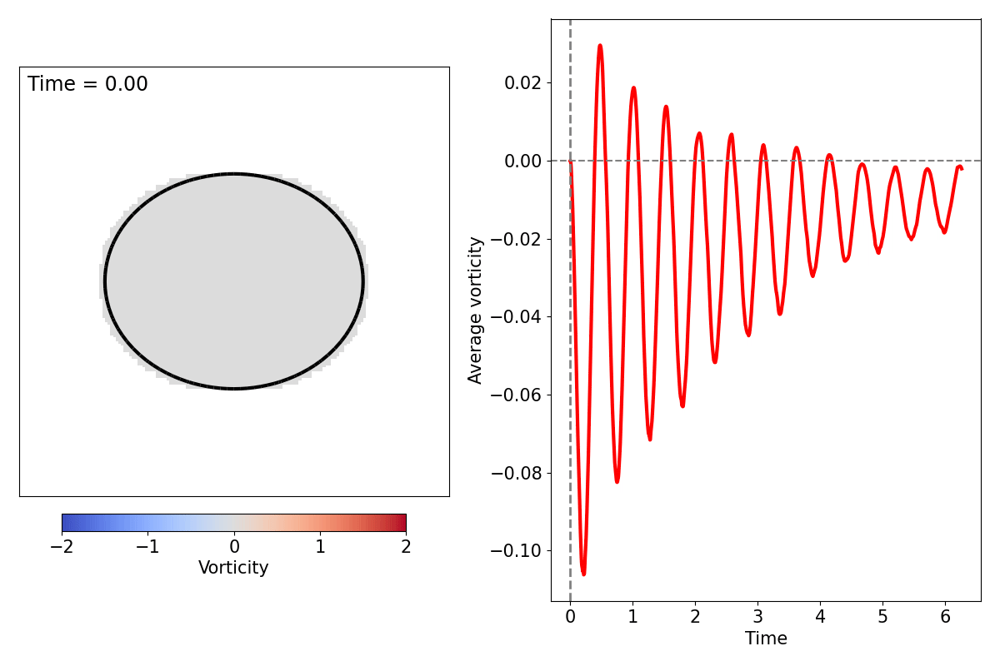
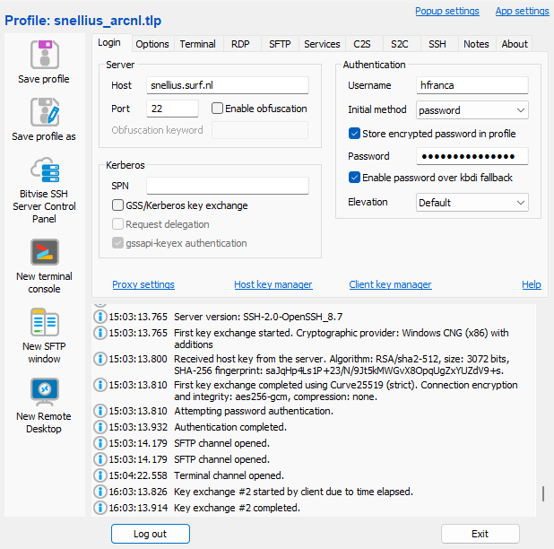
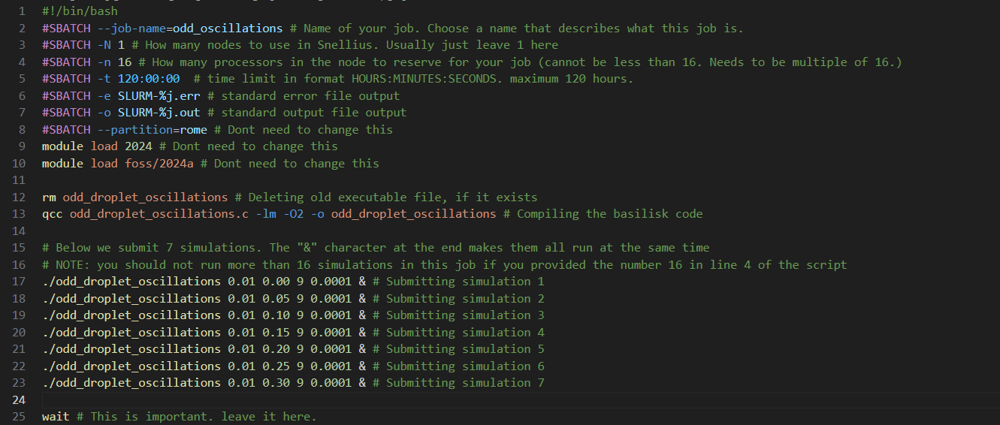
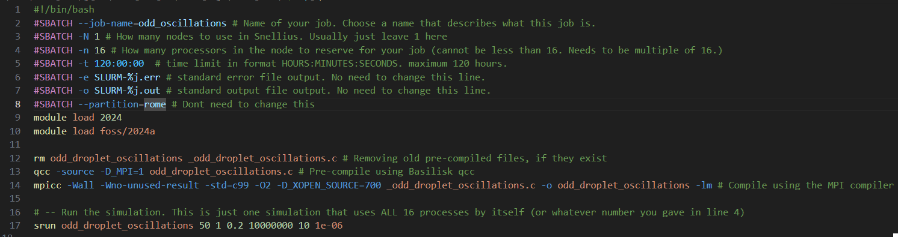

This repository contains a set of examples to get you started with fluid simulations in Basilisk. These examples contain visualization and data output choices that we often use in the FluidLab, for example, outputting VTK files and visualizing in Paraview.
You will need the following in order to go through this tutorial:
Command Prompt on the windows Start menu and choose the option Run as administrator.wsl --install.wsl --install again to finish installation. You will be asked to choose a username and password for your linux system. Note that, on linux terminals, when you type your password the characters do not appear on the screen at all (they are invisible).sudo apt-get update (you will be asked for your linux password).sudo apt install gcc.sudo apt install make.cd, ls, pwd.Make sure you are on the terminal of your linux system in administrator mode.
Download the Basilisk source code with the command: wget http://basilisk.fr/basilisk/basilisk.tar.gz
Extract the source code with the command: tar xzf basilisk.tar.gz
Enter the new extracted folder with the command: cd basilisk/src
Prepare the configuration file with the command: ln -s config.gcc config
Compile the code with the command: make
Make sure you are still inside the src folder. Now add basilisk to your machine path with these two commands:
echo "export BASILISK=$PWD" >> ~/.bashrc and echo 'export PATH=$PATH:$BASILISK' >> ~/.bashrc
Close the terminal window. Open a new one. Type qcc. If the command is found, then Basilisk is installed correctly*.
*Note: if everything is fine, you will get a message similar to: cc: fatal error: no input files. This means the program qcc was found and everything is fine! If qcc is NOT found, you will get a message similar to qcc: command not found. Then something went wrong in the installation!
python in the terminal of your linux system. Sometimes it is also called python3, try that one as well.sudo apt install python3.sudo apt install python3-pippython3 -m pip install numpypython3 -m pip install matplotlibpython3 -m pip install scipysudo apt install paraview.sudo apt install ffmpeg.This example simulates the flow of a Saramito fluid under simple shear. We output the polymeric stress over time and compare to a semi-analytical solution. VTK files are also created and these can be visualized in Paraview.
The first thing to do is compile your code. You can do this using the Basilisk compiler via the following command:
qcc shear_evp.c -O2 -lm -o shear_evp
Now you can run the simulation through the command:
./shear_evp 0.05 3 0.111111
Note that we are passing 3 values as parameters to the simulation. Look into the code file and try to understand what each of these parameters represent.
While the simulation runs you will see a bunch of numbers being output to the screen. Once again, look into the code file and try to find out what they mean. Hint: look at the logfile event.
A subfolder for this simulation will also be automatically created inside the folder outputs. In this subfolder we are saving some log data and also the VTK files to be visualized.
Sometimes you don't want to run the simulation all the way till the end. You can manually cancel a linux process by using Ctrl + C in the terminal window.
In the subfolder that was created by the simulation, you will find VTK files. Each file corresponds to an individual timestep in the simulation. Try to find in the code where we are generating these files and how often they are being printed.
You can open these files in Paraview by doing:
You will see a window that should look something like this:

In the image above there are a few numbered points that you should notice. They are:
Apply button: after opening the file, make sure to click "Apply" so Paraview processes and renders the file data.
Main view: this is the main view window of your data. You can see the entire Basilisk domain and the colors representing the values of a scalar field.
Timestepping bar: you can cycle through timesteps using the buttons on this bar.
Field selection: the VTK contains the values of multiple scalar fields. You can change which field is being visualized by using this combo box.
Representation type: you can change how paraview displays the domain using this box. The "surface with edges" option is often very useful, as it shows you the Basilisk mesh as well.
One should note that there are many different ways of visualizing Basilisk data, for example, the built-in bview tool from Basilisk. In the FluidLab, so far, we are used to visualizing through VTK files and Paraview/Python, but feel free to explore other ways as well that might suit you best.
You will notice that a log file was output in the simulation subfolders containing relevant data. We can use python scripts to process and plot this data as well.
An example script is also provided in this package. You can run it with the command:
python startup_plots.py
This script will look for data in the Basilisk simulation folders and will plot the results. Make sure you run the corresponding basilisk simulations before this script, otherwise it will not find the needed data.
You might need to install some python packages when you run this script for the first time. Also, make sure you adjust the first few lines of the script to match the parameters that you used in your simulations.
If you run the script, for example, for Bi = 3 and Wi = {0.05, 0.1, 0.5, 1}, you should get something like this:

To understand what is being plotted, you might want to read Saramito's 2007 paper (specifically the section on simple shear flow).
This example simulates the spreading of an elastoviscoplastic droplet due to surface tension effects.
To compile the example, run:
qcc spreading.c -O2 -lm -o spreading
Now you can run the simulation through the command:
./spreading 0 0.1 0 1 0.111111 100 1.00E-06 0.001 0.0005 0.0175 10
We are passing a lot of command line arguments. Try to see what they are by looking at the code. If you really want to understand the meaning of these parameters, you might want to read our paper on EVP droplet spreading.
Note that this simulation takes a very long time to finish completely. Make sure you cancel the process after a while.
This example contains an interfacial boundary between two fluids (droplet and ambient). As such, two types of VTK files will be created in the putputs folder:
Mesh files: containing all the scalar field data in the computational mesh.
Interface files: contains an outline that indicates the location of the interface between the droplet and the surrounding fluid (it is not a vacuum!)
Open these files in Paraview by doing:
File -> Open -> [simulation_folder] -> Mesh.vtk.series -> OK -> Click the "Apply" button
File -> Open -> [simulation_folder] -> Interface.vtk.series -> OK -> Click the "Apply" button
After tweaking some settings, you should see something looking like this:

In the image above there are a few numbered points that you should notice. They are:
Pipeline browser: this shows all the active files you have open. Before you change any settings, make sure you always select which file you actually want to change the settings of.
Line width: for the "Interface" files, you might want to use the "Surface" representation and increase the line width, so you can see the interface more clearly.
Rotation: for axisymetric simulations, it is often convenient to do a 90 degress rotation in the visualization.
Make sure you also explore all the Paraview Mesh options mentioned in the first example. In particular: visualizing different scalar fields, visualizing the mesh cells and timestepping over the VTK files. Remember to select the "Mesh" in the Pipeline browser before changing these options!
This example simulates the surface-tension driven oscillations of a droplet with odd viscosity.
To compile the example, run:
qcc odd_droplet_oscillations.c -O2 -Wall -lm -o odd_droplet_oscillations
Now you can run the simulation through the command:
./odd_droplet_oscillations 0.01 0.1 9 0.0001
Again, we are passing a lot of command line arguments. Try to see what they are by looking at the code. The variables "Oh" within the code refer to the Ohnesorge number of the system.
Note that this simulation takes a very long time to finish completely. Make sure you cancel the process after a while.
We can also visualize interfacial an scalar field data using Python. An example script is also provided in this package within the "post_proc" folder. You can run it with the command:
python make_video.py
You might need to install some python packages when you run this script for the first time. Also, make sure you adjust the first few lines of the script to match the folder path where your simulation data is.
If you run the script, it will generate a video similar to the one below.

In this section, we explain how to obtain access and submit simulations to the supercomputer, Snellius.
If you're using Windows, I highly reccomend accessing Snellius through a command called Bitvise. It can be downloaded here: https://bitvise.com/

To transfer files between your computer and Snellius, do the following:
To execute commands within the Snellius server, do the following:
IMPORTANT: in Snellius you should never run a simulation directly on the command terminal, like you would do in your computer. Snellius has a system called "SLURM", which manages submitted simulations into a queue, so that everyone gets to run their stuff if the system is crowded. You should only use the command terminal to run short scripts that take less than 5 minutes or so. If a command will take more than 5 minutes to run, then you should submit it as a job (see the section below).
If you're going to run Basilisk simulations, you need to install Basilisk within your Snellius area. Do the following:
To run a simulation on Snellius you need to "submit a job" to the server. I will teach here two ways of doing it: (1) for simulations that are usual single-process programs and (2) for simulations that are multi-process programs (MPI).
If your Basilisk (or any other code) program runs as a single process, you will need to submit it with a batch script like the one in the image below. You can get the batch script file in this link: [LINK].
In this batch script, we submit multiple simulations that will run at the same time. Each simulation uses only one single process. Make sure to read all the comments in the batch script to understand what everything means.

Basilisk and some other codes allow you to parallelize your calculations using a library called MPI. This means a single simulation will use multiple processes at the same time to calculate things faster. To submit a simulation like this you need a batch script like the one in the image below. You can get the batch script file in this link: [LINK].

In the Snellius command terminal, there are some useful commands you can use to check your simulations and other things.
To see which jobs you currently have running you can use the command: squeue
Sometimes your jobs have names that are really long and don't appear fully in the command above. In that case you can use this slightly more elaborate command: squeue --format="%i %.10M %.30j %.10T"
To cancel a job that is running, do the following:
squeue command and find the number (JOBID) identifying this job.scancel XXXXXXXXYou can check that it was succesfully cancelled by running squeue again.
Use the following command: myquota
The first line of the "home" output will show you the percentage of the total 200GB that you have already used.
The second line (Inodes) will show you how many individual files you have saved (in percentage). There is also a maximum value for this, but it's usually not an issue.
Remember that you have a limit in how many hours you can run, this is given by the amount of SBUs you requested when you created your account.
To check how many SBUs you already used up, use the command: accinfo